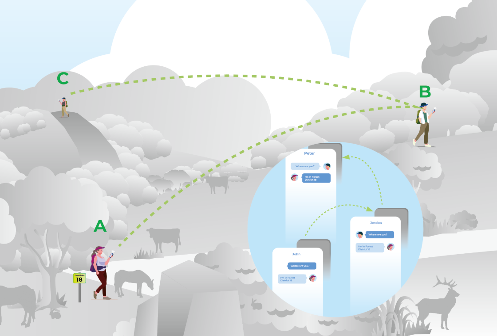
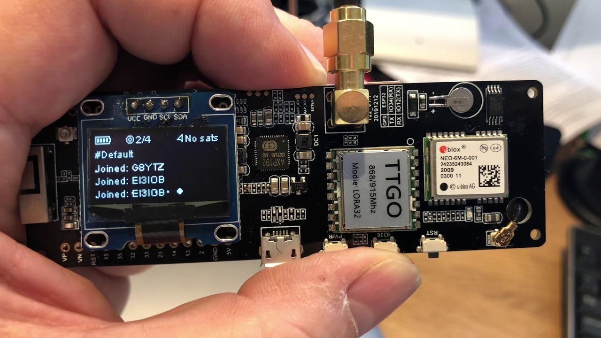

Entendiendo Meshtastic
Imagina poder enviar mensajes de texto, compartir tu ubicacion GPS y tener un chat grupal sin depender de ninguna torre de telefonia usando LoRa
1. Como funciona realmente una red Mesh?
En una red tradicional (como Wi-Fi), si te alejas del router, pierdes la conexion, en una red Mesh cada dispositivo funciona como un repetidor independiente
Si tu quieres enviar un mensaje a un amigo que esta al otro lado de la montaña, tu radio no necesita llegar hasta el directamente, tu radio puede comunicarse con un nodo intermedio y ese nodo lo repite a otro en la cima de una colina o directamente a tu amigo
- Autocurativa: Si un nodo se apaga, la red busca automaticamente otra ruta
- Descentralizada: Nadie es el jefe de la red, todos ayudan a todos a mover los datos
- Cifrada: Aunque todos repitan tu mensaje, solo el destinatario con la llave puede leerlo
 B -> C">
El mensaje salta de nodo en nodo hasta el destino (A -> B -> C)
2. Anatomia de un Nodo Meshtastic
Para entrar en este mundo no necesitas equipos de alto valor, un nodo tipico cuesta menos de lo que se suele creer, pero, ¿que hay dentro de esas cajas impresas en 3D?
ESP32 / nRF52
Es el microprocesador, los modelos ESP32 son potentes y tienen capacidad Wi-Fi (aunque gastan mas bateria), mientras que los nRF52 son super eficientes, usualmente se dejan con un pequeño panel solar durante años
El Chip LoRa
Es el componente que emite las ondas de radio, modula la informacion en campos electromagneticos que viajan kilometros usando un algoritmo muy avanzado capaz de entender comunicaciones por debajo del suelo de ruido y permitiendo un muy bajo consumo
La Antena
Una mala antena te dejara incomunicado, no importa que tan bueno sea tu chip si la antena no esta afinada a tu frecuencia (868MHz o 915MHz)

Dispositivo Meshtastic TTGO TBeam encendido
3. Velocidad vs Distancia
Aqui es donde muchos principiantes se confunden, Meshtastic permite configurar como se envian los datos, pero no puedes tenerlo todo si quieres que la señal llegue lejos, tendras baja velocidad y si quieres enviar muchos datos rapido, no llegaras tan lejos
Estos ajustes preestablecidos se llaman "LoRa Presets", la mayoria de la comunidad usa LongFast
| Nombre del Preset |
Alcance Estimado |
Velocidad de Datos |
Uso Recomendado |
| ShortFast |
Bajo (1-3 km) |
Alta |
Ideal dentro de zonas reducidas o con linea de vision |
| LongFast |
Muy Alto (5-50+ km) |
Media |
El mas usado, es lo recomendado para tener un equilibrio en velocidad y distancia |
| LongSlow |
Enormes |
Baja |
Muy baja velocidad de transmision, pero a la vez permite distancias enormes |
Importante: Si tienes tu radio en LongFast no tendras comunicacion con otros presets como ShortFast
4. Roles de los nodos Meshtastic
No todos los nodos son iguales, dependiendo de donde coloques tu dispositivo y cuanta energia tenga, debes asignarle un Rol, configurar esto mal puede saturar la red y molestar a otros usuarios
-
CLIENT (Cliente)
Es el modo por defecto, asume que el dispositivo va conectado a un telefono y se mueve contigo, entra en modo suspension para ahorrar bateria
-
ROUTER (Enrutador)
Este nodo se coloca en lugares altos, siempre tiene energia (solar o enchufe) y su trabajo principal es repetir todo lo que escucha
-
REPEATER (Repetidor)
Similar al Router pero mas simple, solo repite paquetes, es invisible en la lista de nodos del chat para no "ensuciar" la interfaz visual
-
TRACKER (Rastreador)
Prioriza enviar coordenadas GPS y trata de gastar lo minimo posible para durar semanas, funcionando como un localizador
5. Comunicacion entre redes Meshtastic (MQTT)
Aunque Meshtastic es una red off-grid, a veces queremos conectar ciudades enteras
Si conectas un nodo a tu Wi-Fi y activas MQTT, tu nodo subira los mensajes que escuche a un servidor en internet esto permite que alguien en Madrid hable con alguien en Buenos Aires, usando internet como tunel entre las redes Mesh
Importante: Activar MQTT en el canal publico puede hacer que tu dispositivo reciba mensajes de todo el mundo
Algunos videos explicativos sobre Meshtastic